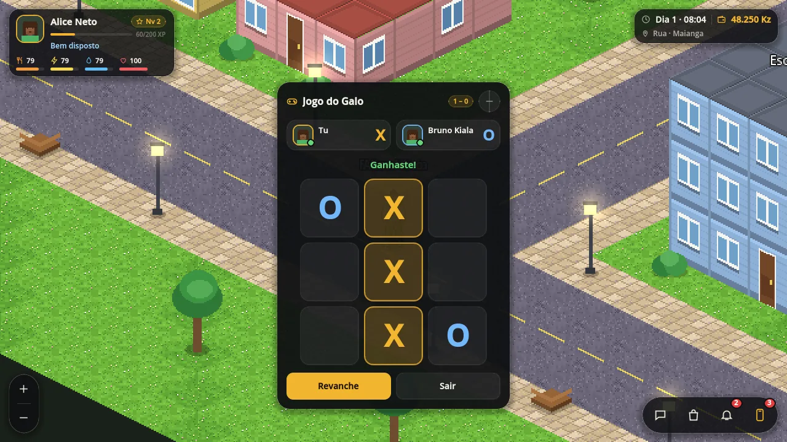
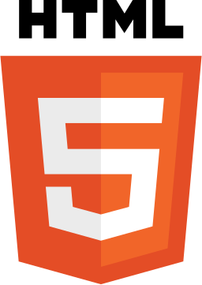
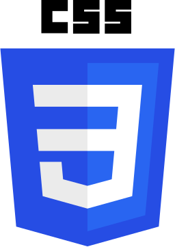
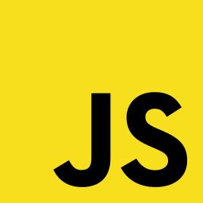
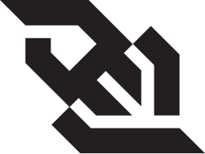
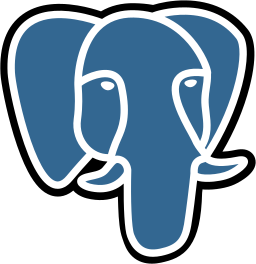
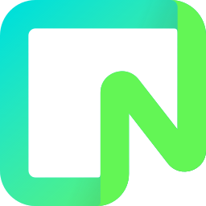
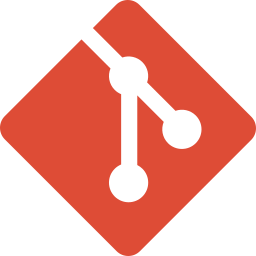
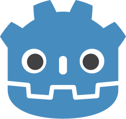
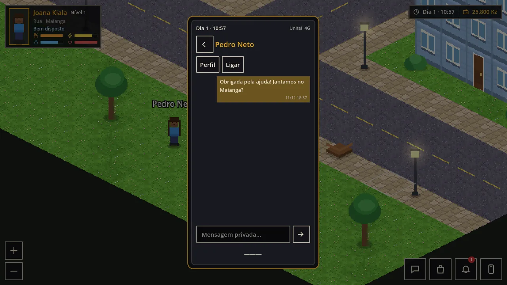

E-commerce and deliveryTudoMix
TudoMix
An online shop with delivery.
I’m an independent developer. I design and build websites, applications and online shops, and the software that runs behind them.Python and JavaScript on servers and the web, Godot for games. My public code includes a multiplayer game whose server owns every rule.
Multiplayer game
A life game set in Luanda that runs in the browser, on a phone too. Players rent rooms, find work, cook, call and message each other.
An online shop with delivery.
Software for managing properties.
Websites and digital work for clients.
An independent game made to learn game development.
A persistent world many people share from a browser, including on iPhone Safari, where nobody can cheat by editing the client.
The Python server owns every rule: needs, money, jobs and minigame turns. The Godot client draws the world and sends intents over WebSockets. Accounts and progress live in PostgreSQL.

Godot 4GDScriptPythonWebSocketsPostgreSQLWebRTCGitHub ActionsRender
A site that says what you do and works on every phone, built to load fast.
Tools your team or your customers use in the browser: accounts, data, dashboards.
Products, a cart, payments and delivery, set up so you can run it yourself.
Repeated office work, such as copying orders or sending reminders, done by software.
Something that does not fit the boxes above, planned with you before any code.

HTML
CSS
JavaScript
WebSockets
PostgreSQL
Neon
Git
Godot 4 and GDScriptWebsites, web applications and digital work for businesses.
Game design, the Godot client, the Python server, the database and the cloud build.

I build the whole thing: the screens people see, the server behind them and the setup that keeps it online. I would rather ship one thing that works than ten that almost do.